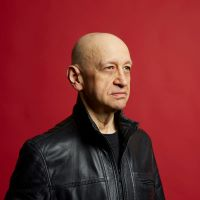

Alexander Vassiliev is a regular guest at some of the most well-known opera houses in Europe.In past seasons, he has sung in five different productions at the Nederlandse Opera, including Lady Macbeth of Mzensk and Die Frau ohne Schatten. He has also been a regular guest at La monnaie in Brussels where he has sung in The Golden Cockerel, Der Rosenkavalier, The Cunning Little Vixen, The Bartered Bride and the Rachmaninov “Troika”. At the Grand Théâtre de Genève, he has appeared in La bohème (Colline) and Le nozze di Figaro (Bartolo). He has previously been invited to the theatres of St. Petersburg, Düsseldorf, Milan, Bologna, Rome, Nancy, Montpellier, Paris and London.
More recently, his engagements included Die Frau ohne Schatten at the Teatro alla Scala in Milan; Les Troyens in Buenos Aires; The Tale of Tsar Saltan in Brussels and Madrid; La bohème in Basel; From the House of the Dead in Lyon, Brussels and London; War and Peace at the Munich State Opera; and La traviata and Le nozze di Figaro at the Glyndebourne Festival.
In concert, he has sung works such as Verdi's and Mozart's Requiems, Bach's St. Matthew's Passion, Janáček‘s Glagolitic Mass and Shostakovich’s 14th Symphony, in venues such as the Concertgebouw in Amsterdam, the Palau de la Musica in Barcelona, and in many other important concert halls in Germany, France, Italy and Holland.
He has worked with some notable stage directors (Pierre Audi, Robert Carsen, Richard Jones, Barrie Kosky) and with renowned conductors such as James Conlon, Kazushi Ono, Mikhail and his son Vladimir Jurowski, and Armin Jordan.
He has featured in many recordings including CD releases of Bizet's Ivan IV (Naïve) and Reznicek’s Tragical Story, as well as in numerous broadcasts, from principal radio stations in Germany, France, Holland and Switzerland.
© 2026 CV Artists Limited